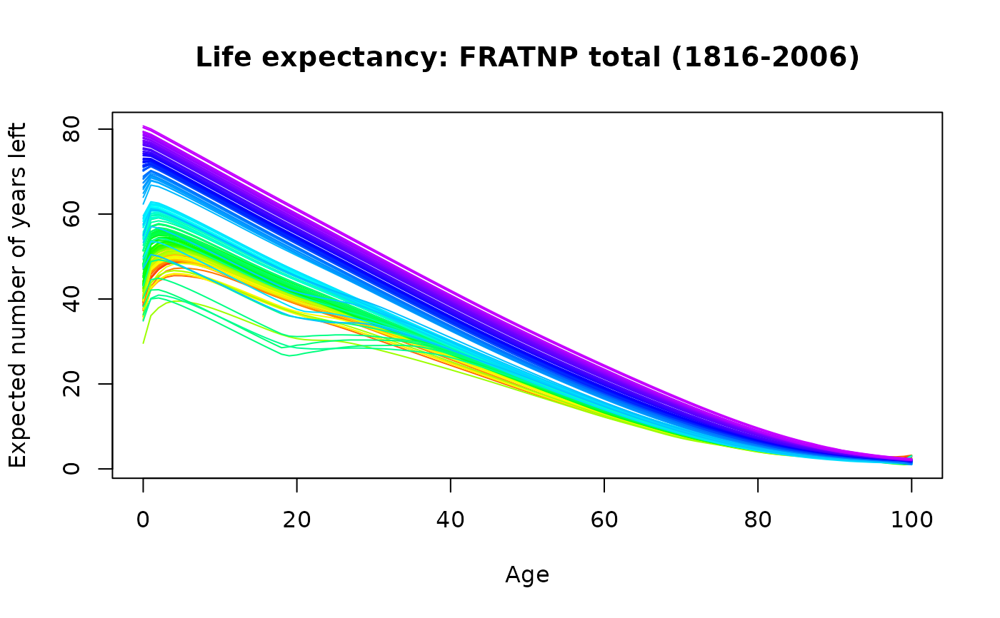
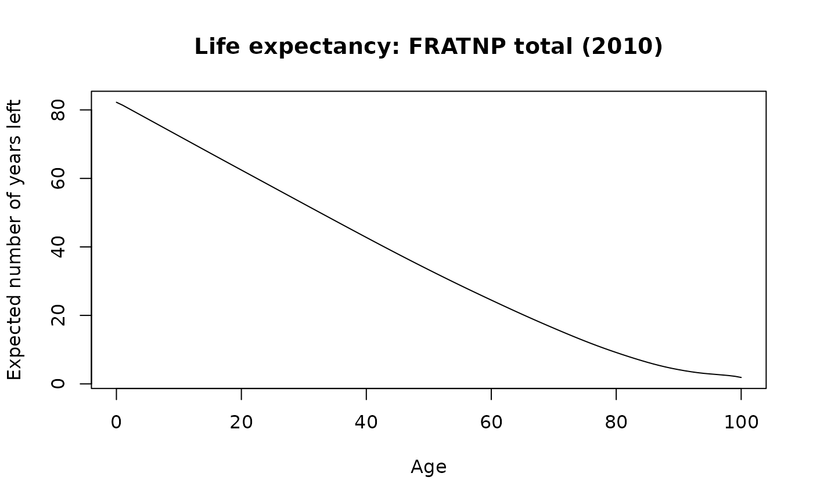

plots life expectancy for each age and each year as functional time series.
Usage
# S3 method for class 'lifetable'
plot(
x,
years = x$year,
main,
xlab = "Age",
ylab = "Expected number of years left",
...
)
# S3 method for class 'lifetable'
lines(x, years = x$year, ...)
Arguments
- x
Output from lifetable.
- years
Years to plot. Default: all available years.
- main
Main title.
- xlab
Label for x-axis.
- ylab
Label for y-axis.
- ...
Additional arguments passed to plot.fds.
Examples
france.lt <- lifetable(fr.mort)
plot(france.lt)

france.LC <- lca(fr.mort)
france.fcast <- forecast(france.LC)
france.lt.f <- lifetable(france.fcast)
plot(france.lt.f, years = 2010)
#> Warning: Please assign column name for the data matrix.
